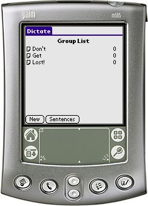

Dictate is a tool to aid in dictation. A teacher creates a group of sentences and reads the sentences out to a class of students. Each student enters the sentences as the student believes they should be spelled. Dictate keeps scores and at the end of the dictation the student gets a chance to view the correct answers. Furthermore, the score can be saved and printed out using Diploma (see below).
Dictate was created as a response to the wishlist found at: http://www.mpsomaha.org/willow/technology/wishlist.html.
Dictate is released under the GNU General Public License v2 and requires Palm OS 3.0 or better.
You can support this project by donating any amount to my Pay Pal account.
A special Thank You! must go to Tony Vincent for the lovely icons and just as lovely User Guide.
v1.5 (2005-10-17) Changed versioning from 1rX to 1.X. Fixed a bug in the Category system. Changes to the existing categories and adding new categories are no longer reverted to the defaults when launching Dictate (thanks Elaine Waters!) v1r4 (2005-08-30) Added the 'All' button to the "Available Sentences" form. Removed the "double-redraw" syndrome on tables. v1r3 (2005-05-19) When viewing answers a correct sentence is only shown once (as in the export score to Memo Pad option) (Tony Vincent). v1r2 (2005-05-19) Fixed a bug where the some of the controls on the export sentences form didn't respond as intended. v1r1 (2005-05-18) First public release.
Diploma is used to print out the score file generated by Dictate. Diploma currently only runs on Microsoft Windows.